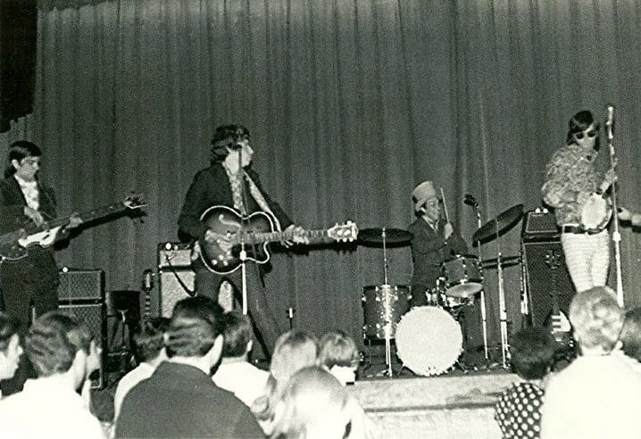

Early Days
Bandet begynte prosessen med å skrive sitt neste album tidig i 2001 og ga ut By
the Way over et år senere, 9. juli 2002. Albumet ble solgt i over én million
eksemplarer bare den første uken og gikk rett inn på andreplass på Billboard
200. Fem sanger fra albumet ble utgitt som singler: «By the Way», «The Zephyr Song»,
«Can't Stop», «Dosed» og «Universally Speaking». Albumets preg er at det er nokså dempet;
Red Hot Chili Peppers bestemte seg for å fokusere på melodiøse ballader enn rapdrevne
funklåter, som bandet hadde fokusert mye på tidligere.[58] Etter utgivelsen av By the
Way ga Red Hot Chili Peppers seg i kast med en 18 måneder lang verdensturné.[59]
Members
afroJack
Bandet begynte prosessen med å skrive sitt neste album tidlig i 2001 og ga ut By
the Way over et år senere, 9. juli 2002. Albumet ble solgt i over én million
eksemplarer bare den første uken og gikk rett inn på andreplass på Billboard
200. Fem sanger fra albumet ble utgitt som singler: «By the Way», «The Zephyr Song»,
«Can't Stop», «Dosed» og «Universally Speaking». Albumets preg er at det er nokså dempet;
Red Hot Chili Peppers bestemte seg for å fokusere på melodiøse ballader enn rapdrevne
funklåter, som bandet hadde fokusert mye på tidligere.[58] Etter utgivelsen av By the
Way ga Red Hot Chili Peppers seg i kast med en 18 måneder lang verdensturné.[59]
krollTop
For å promotere albumet tok bandet i 2006 fatt på en ny verdensturné.
Den begynte med en to måneder lang Europa-turné fra slutten av mai til midten
av juli og fortsatte med konserter i Nord-Amerika fra slutten av august til
begynnelsen av november. Red Hot Chili Peppers vendte siden tilbake til Europa
for en andre turné som varte til midten av desember. Bandet begynte 2007 med en andre
turné i Nord-Amerika som gikk fra midten av januar til midten av mars, denne gangen
inkludert konserter i Mexico i tillegg til i USA. Denne ble etterfulgt av flere
konserter i Australia og New Zealand fra tidlig til sent april, før bandet
satte kurs for Japan i begynnelsen av juni. Verdensturneen endte med en tredje runde
med konserter i Europa fra slutten av juni til slutten av august. Bandet spilte
også på Live Earth-konserten som ble holdt på Wembley Stadium i
London 7. juni 2007. Iløpet av turneen spilte Red Hot Chili Peppers på flere festivaler,
inkludert Oxegen-festivalen i Irland i juli 2006, Lollapalooza i Grant Park i Chicago i
august 2008 og Coachella Valley Music and Arts Festival i Indio i California i
slutten av april 2007.
Stadium Arcadium mottok i februar 2007 seks Grammy-priser. Disse var for beste rockalbum,
beste rocksang (Dani California), beste rockutgivelse av en duo eller gruppe med
vokal (Dani California), beste spesialutgave av album, beste produsent (Rick Rubin)[63]
og beste musikkvideo i kortform (Dani California). Red Hot Chili opptrådte under
seremonien med sangen Snow ((Hey Oh)).
Onzii
Dave Navarro opptrådte første gang med bandet på Woodstock '94, hvor de bar enorme
lyspærekostymer, noe som gjorde det nærmest umulig for dem å spille på instrumentene
sine. Utad så bandmedlemmene ut til å komme godt overens, men innad ble forholdet
mellom de tre etablerte medlemme og Navarro stadig verre.[39] Navarros musikalske
bakgrunn skilte seg ut fra de andres, noe som skapte problemer da de begynte å spille
sammen,[40] og fortsatte å være et problem hele det neste året da Red Hot Chili Peppers'
sjette album ble spilt inn. One Hot Minute, det eneste albumet Dave Navarro deltok på,
ble gitt ut 12. september 1995. Til tross for blandede kritikker ble albumet en suksess.
Bandmedlemmene selv beskrev One Hot Minute som et mørkere og tristere verk enn de foregående
fem,[41] men hele 5 millioner eksemplarer ble solgt over hele verden.[42] Balladen
«My Friends» ble bandets tredje nummer 1-single. Sangene «Warped» og «Aeroplane» gjorde det
også godt på hitlistene.
Flere av sangene fra albumet ble gjenutgitt på såkalte soundtracks. «I Found Out»,
en låt opprinnelig av John Lennon, ble utgitt på Working Class Hero: A Tribute to John Lennon.
«Love Rollercoaster», opprinnelig av The Ohio Players, ble utgitt på soundtracket Beavis and
Butthead Do America, og ble utgitt som single.
På dette tidspunktet hadde Kiedis gjenopptatt heroinmisbruket sitt. I april 1998 ble det gjort
kjent at Navarro hadde forlatt bandet, og Kiedis poengterte at avgjørelsen var «gjensidig».[43]
Dog ble det rapportert om at Navarro ble kastet ut av bandet etter å ha møtt opp til bandøving
under påvirkning av narkotika, hvor han blant annet skal ha falt baklengs over en forsterker.[44]
Kiedis har senere uttalt at hendelsen skulle vært komisk, men isteden bare var pinlig og utgjorde
det endelige støtet som førte til at Navarro sluttet i Red Hot Chili Peppers.[45]
.jpg)